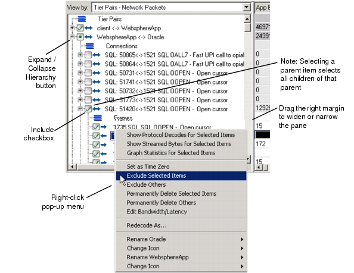

Tree Pane The tree pane organizes an application into tier pairs, connections, and frames. Each line shows high-level decode data for an item. Figure 13-2 Tree Pane  The checkboxes by each item indicate whether it is included or excluded from consideration. You can modify this setting from the Edit menu or by right-clicking an item to open the Selection pop-up menu. Setting the View The View By pull-down menu (lower-left corner) determines how the treeview organizes and shows the application. The available settings are: • Tier Pairs - Network Packets—The treeview organizes the task by tier pairs (top level), port connections (within each tier pair) and packets. • Tier Pairs/Application Transactions—The treeview organizes the task by tier pairs (top level), application transactions (within each tier pair) and application messages. • Application Transactions—The treeview organizes the treeview by application transactions (top level) and packets, without regard to tier pairs. Application Transactions How AppTransaction Xpert defines an “application transaction” depends on whether you have a license for AppTransaction Xpert Decode Module. With AppTransaction Xpert Decode Module AppTransaction Xpert defines an application transaction as an exchange of messages between two tiers, in which • All messages use the same port on each tier • Each message (except the first) is dependent on a previous message For example, suppose your task includes a series of consecutive messages that go to or from port 80 on a client tier. These messages go to or from two different ports (1206 and port 1203) on the server tier. AppTransaction Xpert organizes these messages into two different transactions (80<-->1203 and 80<-->1206). Occasionally, a connection might transfer messages between two ports and close; later in the application, another connection opens between the same two ports and transfers more messages. In this event, AppTransaction Xpert groups the messages into separate transactions. Without AppTransaction Xpert Decode Module AppTransaction Xpert can organize a task into different types of transactions based on the application type. For example, AppTransaction Xpert can decode HTTP messages and arrange them into GET, Connection Open, and Connection Close transactions. For more information, see AppTransaction Xpert Decode Module.